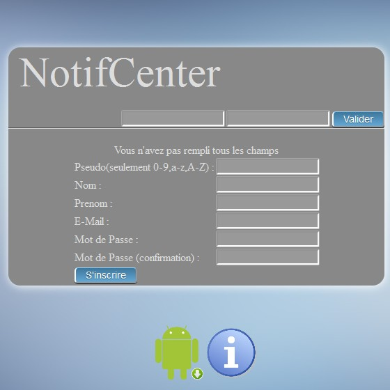

Introduction
Si vous êtes Webmaster et désirez que vos utilisateurs soient connectés de partout à votre site, c'est maintenant possible!
Notif'Center est l'intermédiaire entre le site que vous gérez et ses utilisateurs.
Afin d'intégrer notre service, nous vous conseillons de bien lire cette documentation.
Les premières étapes
Pour commencer, il va falloir inscrire le site à notre base de données.
Pour cela inscrivez-vous ici:
Inscription (Il est nécessaire pour nous de connaitre les Webmasters qui ont enregistré leur application par mesure de sécurité.)

Et enregistrez votre site ici:
Enregistrer le site